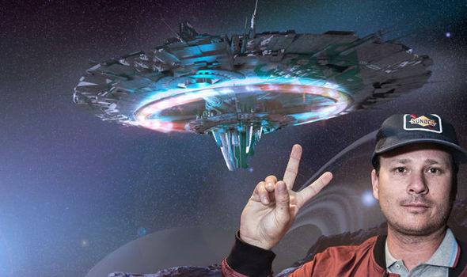

Tom Delonge is the most beautiful Pop-Punker of all time. He is from San Diego, California. He formed one of the most influential alternative bands, and arguable the greatest band of all time, Blink 182. The other important members of this band are Travis Barker on drums and Mark Hoppus on bass. However, when the band formed, there was a different drummer. I don't even know this guy's name, because that's how unimportant he is. Now, Tom Delonge isn't even in the band, and has been replaced by a crazy man named Matt Skiba.
One of Tom's most important contribution to this world, besides his handsome looks and wonderful music, is his passion for alien discovery. He has dedicated his life to this research. His brand is called To the Stars, in which he desperately believes. This is the main reason he was kicked out of / quit Blink 182, depending on who you ask. He thinks it was mutual, but the band was pretty mad at him.
This man has truly changed my life in several ways. One of my favorite songs ever written is called Asthenia. Asthenia is the sensation of having a lack of strength. The song opens with all of these sounds taken from astronauts in space. It was meant to be written about someone lost in space and just floating out there being extremely sad and lonely. My favorite lyric is "This room is bored of rehearsal and sick of the boundaries. I miss you so much." I love this quote because even though Tom says that this song is strictly about an astronaut, it is so applicable to so many people in so many ways.
| Things that Make Tom Perfect | |
|---|---|
| His Height | 6'4" |
| His Music | Blink 182, Angels and Airwaves, Boxcar Racer |
| His Concern for Humanity | Ernest Alien Discovery |

HeRE is EvERytHiNg he DoES WiTh ALiEnS